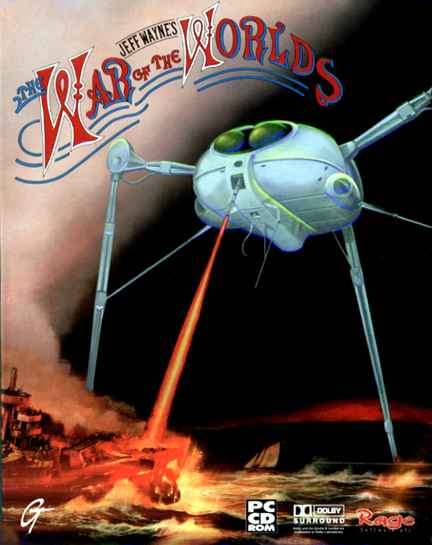
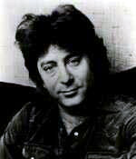

Chapter 15. War of the Worlds
After Stag version 2 we contacted Jeff Wayne, an American composer/musician (whose offices were in London), to see if he would be at all interested in letting us stage his phenomenally successful double album 'The War of The Worlds' released in mid 1978. As implied by the title it was a musical version of the famous H. G. Wells novel and featured a number of famous artists from the late 1970's, including David Essex, Justin Hayward from the Moody Blues, Phil Lynott from Thin Lizzy and even Richard Burton. The musical style was unusual for its day and relied heavily on overdubbed synthesizers, one memorable example being the music used for the Aliens laser weapon.

There are certain albums that everybody regardless of taste seems to own, the Beatles Sergeant Pepper, Simon and Garfunkels Bridge over Troubled Waters... and War of the Worlds. Musically it was simpler and unlike Stag, the story was easy to follow and well known, the staging however would have been quite different. How would we have aliens and ships on stage? The general consensus was we would definitely be onto a winner, with Chris Fogg adamant he could make the staging work.
We didn't immediately enter for a place in the Amateur festival at the Royal Exchange that year 1980, because we didn't want to commit ourselves to doing the War of the Worlds without the approval of Jeff Wayne. Sadly the time to enter lapsed and then a few weeks afterwards, he gave his consent.
Unperturbed we began planning and rehearsing the show, from what we could hear from the original album, as we had not got the score yet. I was planning a trip to London anyway and so set up a meeting with Jeff Wayne at his offices. He was very polite and charming and had only nice things to say about the idea. I briefly saw his musical score which was a vast A3 orchestral score, with everything scored out just as if it was a symphonic composition. He said we would have to have it photocopied, but he would allow that, although it would cost several hundred pounds to do it! I left his offices with only good thoughts and the fact that I had met a great guy, who was very charming, and seemed genuinely delighted that he was going to see his work on stage one day soon.
 It quickly dawned on us that this was going to be a huge event, even surpassing Tommy in its complexities. So Shirley Hawley who worked at Renault, approached her works, and after a period of time they agreed to finance the show to the tune of £3,500, no strings attached. I planned to use the money to get professional session men, while Chris Fogg would be spending his budget on all the multiple props and staging that we would need. This would be a large budget production for us. Fabulous!
Except... six weeks from production, Renault was taken over by Henleys who proceeded to drop us like hot cakes. End of production!
The sad thing is that to my certain knowledge, War of the Worlds was NEVER done on stage until Jeff Wayne produced it in 2006. What a great shame, and what a fantastic opportunity missed! We would have really hit the heights if only Henleys had waited another two months before they took over Renault. Oh well..!